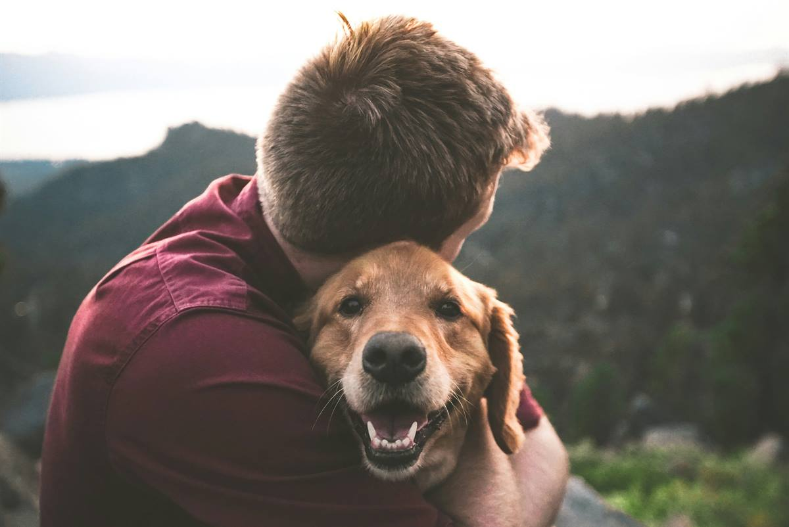
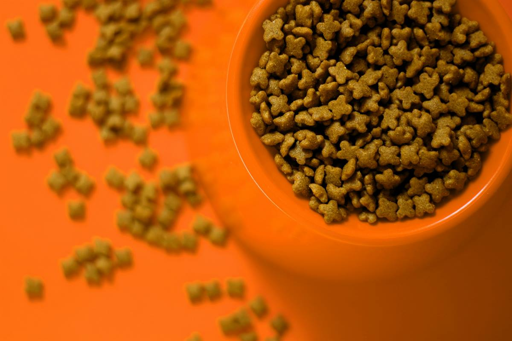
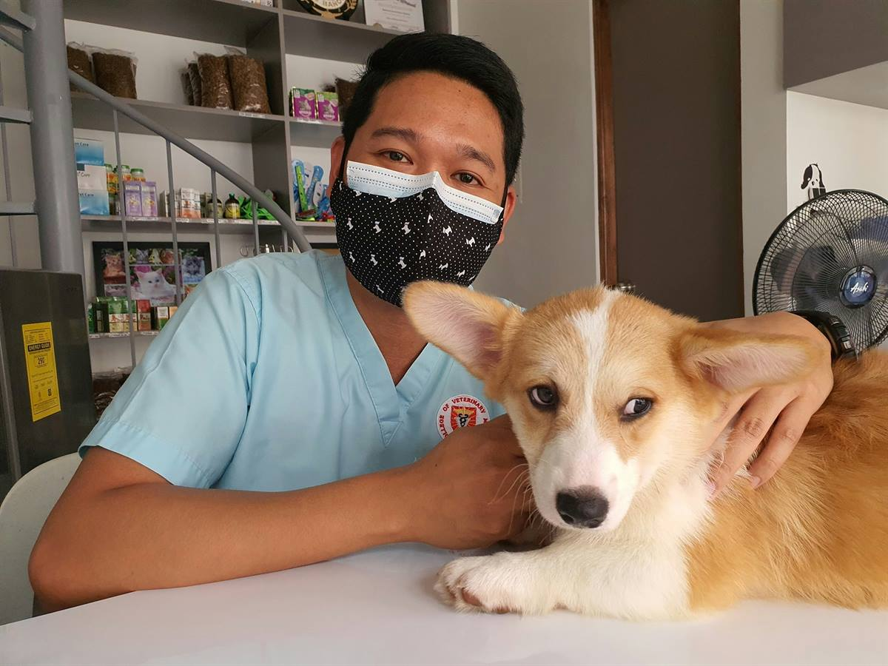

Milo encontró familia

Después de ocho meses en tránsito, Milo se fue a vivir con una familia del barrio. Ya es el séptimo animal que damos en adopción este mes.
Rescatamos, curamos y buscamos familia para los perros y gatos de Sáenz Peña.

Somos una asociación civil sin fines de lucro formada por vecinos y vecinas de la ciudad. Trabajamos todos los días para que ningún perro ni ningún gato tenga que vivir en la calle.
No recibimos subsidios: nos sostenemos con el aporte de nuestras socias y socios, con las donaciones del barrio y con el trabajo del voluntariado.
Hay muchas formas de ayudar. Elegí la que más te guste: darle una familia a un animal, sumarte con una cuota mensual o hacer una donación única.

Después de ocho meses en tránsito, Milo se fue a vivir con una familia del barrio. Ya es el séptimo animal que damos en adopción este mes.

Durante todo el mes recibimos donaciones de alimento en el refugio, de lunes a sábado de 9 a 18. También podés dejarlo en las veterinarias amigas.

El quirófano móvil vuelve a la plaza del barrio. Los turnos son gratuitos y se piden por teléfono. Mirá las fechas en Castraciones.